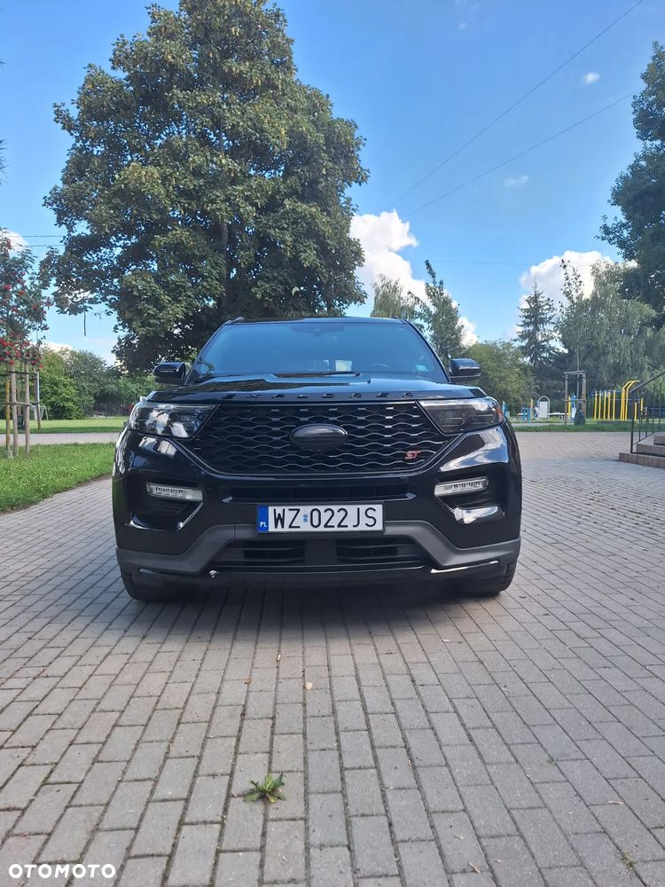
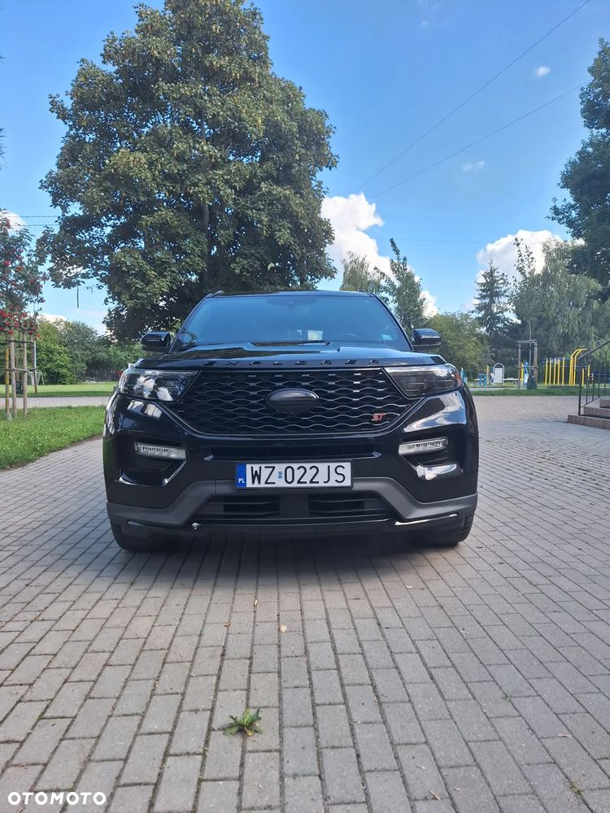
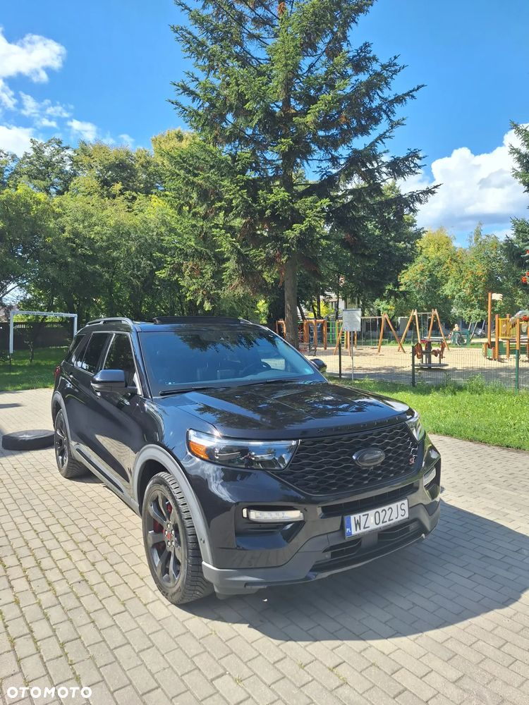
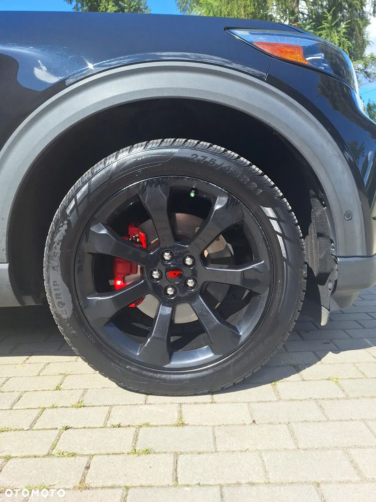
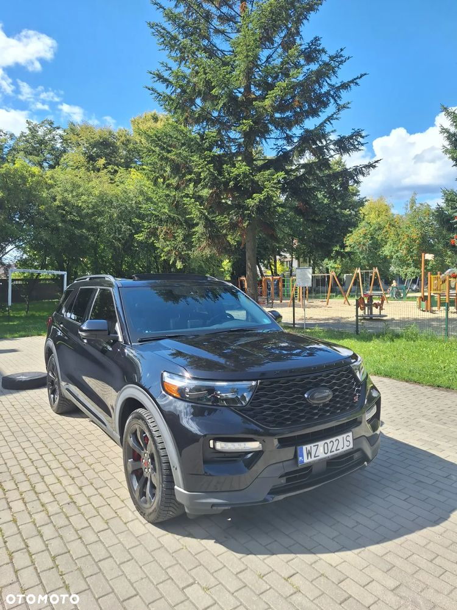
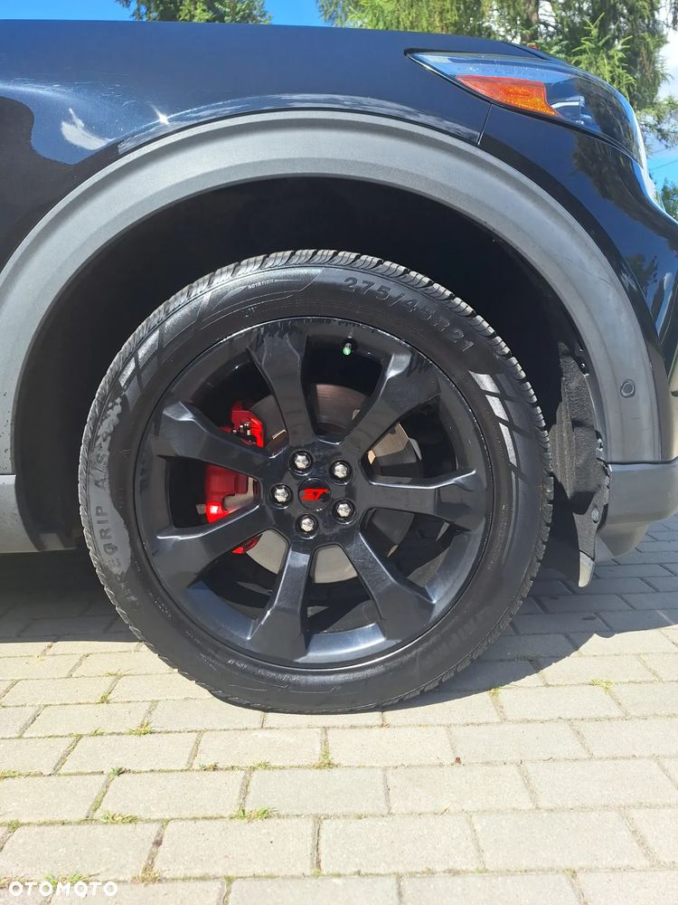
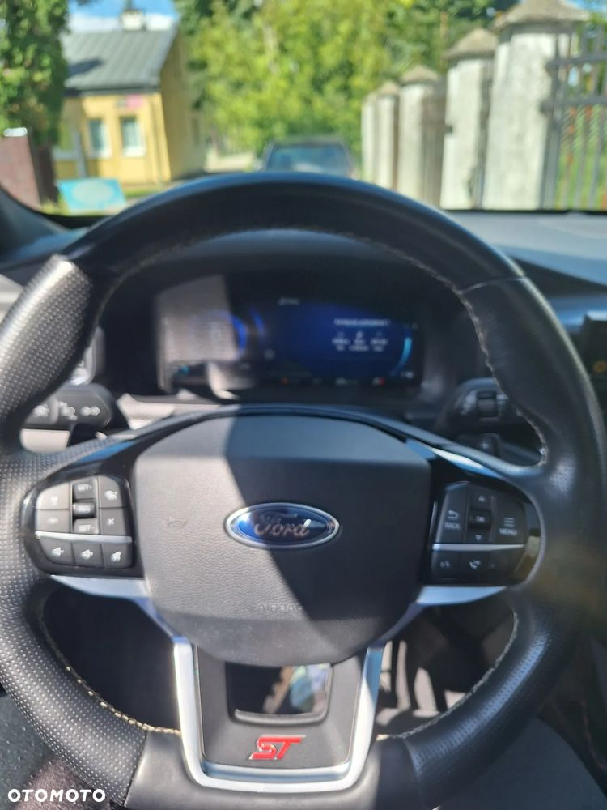
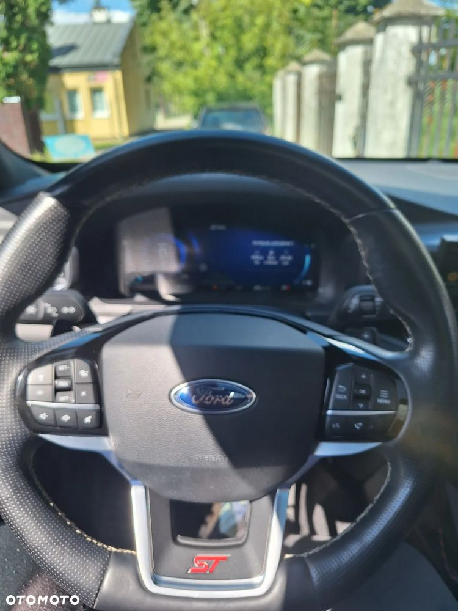

Ford Explorer najbogatsza wersja st 400 koni mechanicznych założona instalacja gazowa kme za ponad 10 000 zł Samochód sprowadzony prywatnie dla mnie z niewielkim uszkodzeniem tylnego błotnika( wszystkie zdjęcia z aukcji przed naprawą w trakcie naprawy do wglądu) pirotechnika nie była Wystrzelona Samochód niestety muszę sprzedać z przyczyn osobistych lakier zabezpieczony trzyletnią powłoką ochronną lub 75 000 km oraz wszystkie szyby pokryte niewidzialną wycieraczką, na specjalne zamwówienie ściągnięty ze stanów sportowy ukłąd wydechowy za cenę 12000 zł również olej wymieniony skrzyni jak również w obu Mostach i silniku samochód w stanie perfekcyjnym na chwilę obecną w 100% sprawny
 



 


 
